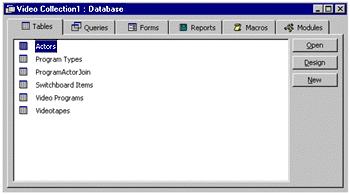
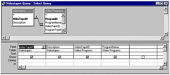
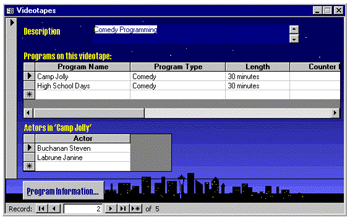

|
| ||
|
| ||
Nancy Cluts
Developer Technology Engineer
Microsoft Corporation
January 13, 1999
The following article was originally published in Site Builder Magazine (now known as MSDN Online Voices).
Databases are a whole lot easier than you may think. Ignore the strange lingo for a moment (tables, queries, fields, etc.); I'll explain those later. A database is simply a way to store collected data in a structured way that makes it easier to classify and find later.
There are many different things you can store in a database:
You can store this information elsewhere. For example, I have a phone list that I keep in my purse. This is great when I am on the road, but it doesn't help my husband at home look up a number if I have the information in my purse. We keep the master list in a database, so that we can view it in a variety of ways, print it out, and share it over our home network. I can also keep the contact information for doctors, baby sitters, and so forth in this list -- as well as other information, such as birthdays, e-mail addresses, and the names of my child's friends. Because this information is in a database, we can sift through it and create a list of people to whom we want to send Christmas cards. We can then format the selected information, and print it on labels to affix to the cards.
Databases contain specialized storage containers called tables. In the example above, the address book would be the table. An entry in a table is known as a record. An analogy for those of you who are familiar with spreadsheets would be the following: in a spreadsheet, you keep data in datasheets (similar to a table) in rows and columns. Data within a specific row would be akin to a database record.
When I want to go through the address book and find all of the names and addresses for folks on my Christmas card list, I create a query. A query is a question about the data that is stored in a database. For example, if I wanted to get a list of all people on my Christmas card list who reside in California, I could create a query such as:
SELECT * from AddressBook WHERE State=CA
Roughly translated into non-GeekSpeak, this says "Who are the people in my address book who live in California?"
The result of the query can then be formatted based on my specifications for printing into a report. For example, I can format the data to create a sheet of address labels for my cards (in fact, this is exactly what I do each year). I can also format the information for viewing and altering online via a form. Those of you who are already familiar with Visual Basic® forms understand this concept. In fact, you may have already run into forms via the Web page <FORM> element. Forms on a Web page allow users to enter data on their machine in a format that is easier to understand.
Probably the easiest way to understand databases is to give you some examples and demonstrate how you can create a database of your own. The first step in this task is to select the tool that you will use. I happen to have a copy of Microsoft® Access 97, so that's the tool I will demonstrate (besides, it makes the boss smile when I use our products). Access comes with a stock set of wizards that you can run to create your databases, including an address book, book collection, expense tracking, order entry, and recipes. For your first time, I recommend trying out one of the stock databases, so that you can really understand how everything works before jumping in and creating your own. I chose video collection. The stock video collection database that comes with Access stores information about the video, actors, programs, and types of program. To get you started, the wizard will even provide example data for your database. The remainder of the wizard walks you through choosing a layout for the full screen display of the database (the forms) and the layout for printing (the reports). At this point, you click the "Finish" button to have all of your files, forms, and reports created. You can now enter your data into the database. One of the forms automatically created for you is called "Switchboard" and allows you to add or view information and preview your reports. For our purposes, let's take a look at the tabbed dialog you get for your video collection database. Below is a screen shot of what Access creates for you.

As you can see from the screen shot above, the wizard created several tables in the database. Each table contains specific information; in this example, the Actors table contains the names of the actors in the videos, with an identification number for each actor. Similarly, the Video Programs table contains the names of the videos and an identification number for each video. The ProgramActorJoin table contains the not only the actors, but the identification numbers for the programs in which they appeared. By separating the information into several tables, you gain the flexibility of being able to mix and match data for any type of report you might want. You do this by creating a new query. In the example above, no sample queries are provided in the "Query" tab; however, queries aren't all that tough, especially if you click on the "New" button and choose one of the query wizards to help you.
For your first query, you might want to use the Simple Query wizard. With this wizard, you can select the table(s) and fields that you want to get at. Your query will be created for you. To understand what is going on "under the hood," right-click on the query and choose "Design."

This view shows you the two tables I chose, Videotapes and Video Programs, and the fields I chose. As you can see, you can sort on these fields and choose to show or not to show each field.
If you are a developer, you can also add logic to your program to select information from a database using Structured Query Language (SQL). It consists of commands, such as SELECT, AND, WHERE, and SORT. For example, the command below will select all of the videotapes in the Videotapes table that are comedies.
SELECT ProgramName AND ProgramType FROM VideoPrograms WHERE ProgramType = Comedy
The same user interface and the programming techniques you learn using Microsoft Access also apply to more advanced tools available with the Enterprise edition of Visual Studio®.
Forms are used to give you a specialized view of the data in your database using different controls. A control is simply some standard input element, such as a button or an edit box. You can create a form that contains information from different tables within your database. In the videotape example we've been using, you can use one of the stock forms, such as the Videotapes form (below), or design one of your own.
Forms are meant to be interactive rather than static. Within a form, data can be added or removed from the database. Using Access, you have a WYSIWYG opportunity to drag and drop fields and display items onto a form using the Form designer.

Reports are akin to forms; however, reports are a snapshot of selected data within a database at a particular time, formatted to display the information that you want to highlight. Within a business, you create different reports to hand out to different audiences. For example, a bank may have a large database containing information about all of the accounts and customers for the bank. Reports are created from data that is culled from the database and specialized for different departments in the bank. The credit card department would want a different set of information than the money market department. For your own database, you can use Microsoft Access to create a report by choosing one of the stock reports created for you, or you can design your own using its WYSIWYG form designer (yep, just like when you created your forms).
Now that you have an idea about what databases are and how they work, you have probably come to the conclusion that it would be really convenient to be able to hook your company's database up to your Web site. You aren't the only one to reach that conclusion. The articles below can give you the skinny on databases and your Web site. With the information in this article and the information in those listed below, you should be on your way to understanding what you can and cannot do with your database on your Web site.
Ever since MSDN Online developer-technology writer Nancy Cluts became a godmother recently, she's been making us offers we can't refuse.
Did you find this material useful? Gripes? Compliments? Suggestions for other articles? Write us!
© 1999 Microsoft Corporation. All rights reserved. Terms of use.